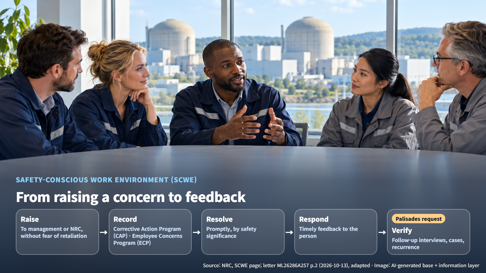
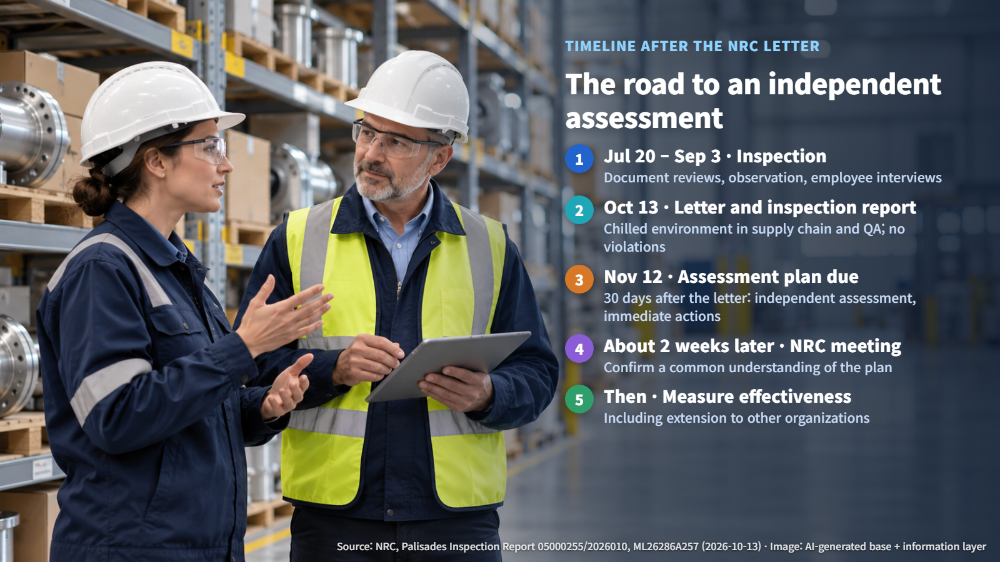

United States · Safety Culture
No Violations Found, Yet the NRC Asked for Improvements: Safety Culture at Palisades
The NRC found no violations at Palisades, yet asked Holtec for an independent assessment of how freely staff in two departments can raise safety concerns.
When people think about nuclear safety, they usually picture reactor hardware or emergency systems first. This time, however, the U.S. Nuclear Regulatory Commission (NRC) focused on something less visible: how comfortable employees feel raising safety problems. Even though its inspection identified no violations of regulatory requirements, the regulator asked the plant's operator for an improvement plan. Let's look step by step at why.
What the NRC Found: Two Departments Where Speaking Up Felt Hard
On October 13, 2026, the NRC issued a letter and an inspection report to Holtec, which operates the Palisades Nuclear Plant in Michigan. The inspection ran from July 20 to September 3 and combined document reviews, observation of activities and employee interviews. Its conclusion was that a chilled work environment had been identified in two departments, supply chain and quality assurance.
A chilled work environment is one in which employees' willingness to report safety or regulatory concerns has been suppressed. Some employees in the two departments hesitated to use the reporting channels available to them because they feared retaliation or losing their jobs. Employees said that concerns about equipment procurement and qualification, and about work management and work execution procedures, were not being adequately addressed. They also raised concerns about the quality assurance department's ability to operate independently. The NRC explained that this environment also affected the use of the Corrective Action Program (CAP, the system for recording problems and carrying out fixes) and the Employee Concerns Program (ECP, an additional channel for passing concerns along), and that earlier actions had not produced sufficient results.
Across the plant as a whole, most employees said they could raise safety issues without fear of retaliation. The inspection identified no violations of regulatory requirements and no other significant plant safety issues. Citing existing mitigating measures such as independent work verification, supervisory oversight and cooperation between departments, together with employees' adherence to procedures, the NRC concluded that the planned restart would not be adversely affected by this localized issue.
What a Safety-Conscious Work Environment (SCWE) Means
The reason for asking for improvements without any violation lies in a concept the NRC treats as a foundation of safety: the Safety-Conscious Work Environment (SCWE), a workplace where people can raise safety concerns freely.
An SCWE brings three things together. It encourages people to raise problems, it reviews and resolves them promptly according to their safety significance, and it gives the person who raised the concern timely feedback on the outcome. The concept starts with a reporting channel and extends to how a concern is handled and answered after it is received. Small warning signs in the field are often noticed first by the people doing that work. An organization where those people can raise their hand without hesitation finds problems early.

In a policy issued on May 14, 1996, the NRC applied these expectations to regulated activities of licensees and of their contractors and subcontractors. The principle is that employees must be able to raise concerns with management, and with the NRC, without fear of retaliation.
Why the Quality Assurance Organization Needs Independence
It is worth noting that one of the two departments named in this case is quality assurance. Appendix B to 10 CFR Part 50 of the U.S. federal regulations defines quality assurance (QA) as the planned and systematic actions needed to provide confidence that equipment will perform satisfactorily in service. Identifying quality problems, recommending solutions and verifying that those solutions are carried out fall within the authority of the QA organization.
Independence is the key. Criterion I requires the QA organization to report to a management level that gives it sufficient independence from cost and schedule pressures when these conflict with safety, and to have direct access to the levels of management it needs. Even when work is moving at full speed, quality staff must be able to signal a stop.
Criterion XVI requires that, for significant conditions adverse to quality, the cause be determined, corrective action be taken to prevent recurrence, and the condition be reported to management. Criterion XVIII requires periodic audits by trained personnel who have no direct responsibility for the work being audited. A quality assurance program works as intended when the people who use it can speak freely.
What Comes Next: Independent Assessment and Measuring Effectiveness
The NRC asked Holtec for a plan that covers an assessment by an independent organization with nuclear assessment experience, immediate actions, extending the review to other organizations, and measuring the effectiveness of corrective actions. The plan is due 30 days after the date of the letter, which is November 12. The NRC said it would like to hold a meeting about two weeks after receiving the plan to confirm a common understanding. The assessment needs to be designed so that the number and job mix of people interviewed or surveyed, and the scope of the questions, support meaningful conclusions.

Effectiveness is confirmed in two steps. Records of completed training and procedure revisions show that actions were carried out, while follow-up interviews, case handling and whether problems recur show whether real change has taken place. Changes in the number of reports reflect workload, trust in the reporting process and actual problems all at once, so the counts and the content of the cases need to be reviewed together. The next milestones are Holtec's submission of its assessment plan and the meeting with the NRC that follows.
Nuclear safety is completed by robust equipment together with an organization where voices from the field travel upward without obstruction. The Palisades case shows that the regulator also pays close attention to how freely those voices flow.